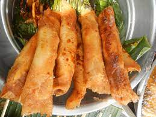

Banana Turon Recipe

Description
Banana Turon is a popular merienda or snack that is made with plantains wrapped in lumpia wrappers,
fried, and then coated with caramel.
Ingredients
- 8 pcs saba banana halved lengthwise
- 16 lumpia wrappers
- 0.25 cup sugar
- 1 cup oil for frying
Directions
- Wrap banana pieces in lumpia wrapper like a cigar
- Heat oil to 130C then add sugar. Heat until the sugar has melted.
- Fry turon in batches, turning occasionally making sure the caramel sticks.
- Drain in a rack and serve.